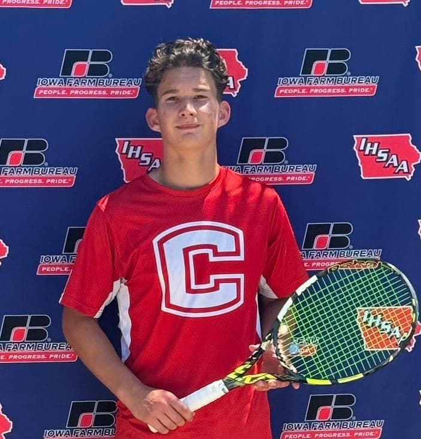

About Me

My Story
I am currently a high school student at Chariton High School with an interest in technology and learning new skills. I enjoy challenging myself academically and exploring how computers can be used to solve real-world problems.
Outside of school, I enjoy playing tennis and working out. I also like learning about computer science and finding opportunities to improve my technical skills.
Education
- Chariton High School
- Graduation Year: 2027
- Relevant Coursework: Python Programming and Beginning Web Development
Skills
| Skill | Category |
|---|---|
| Python | Programming |
| HTML and CSS | Web Development |
| Problem Solving | Personal Skill |
| Communication | Personal Skill |
Interests
- Computer programming
- Artificial intelligence
- Cybersecurity
- Fitness and exercise
- Tennis
Achievements
- Current Valedictorian
- CPR Certified
- 2026 State Tennis Qualifier
- 2026 District Tennis Runner-Up